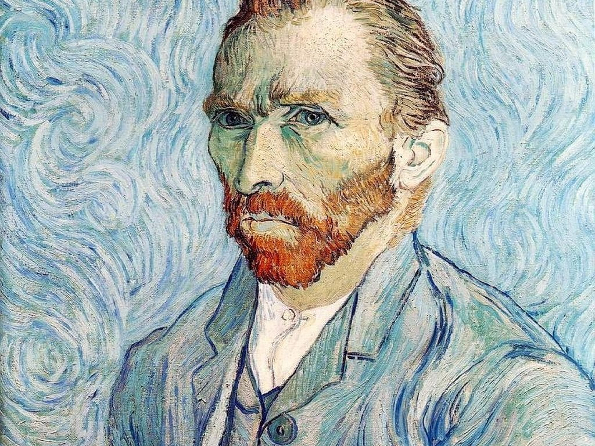
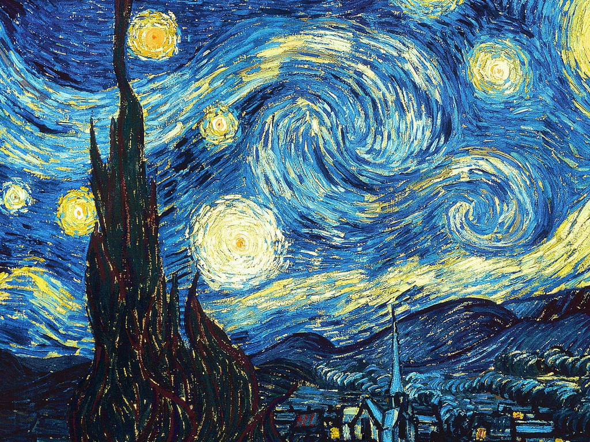
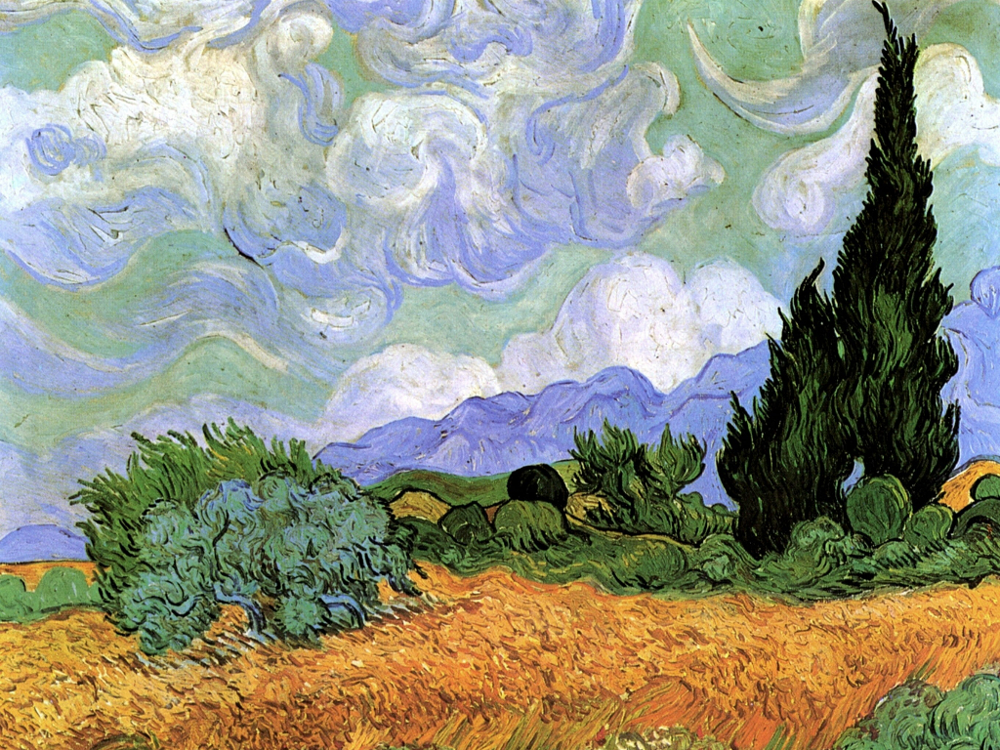
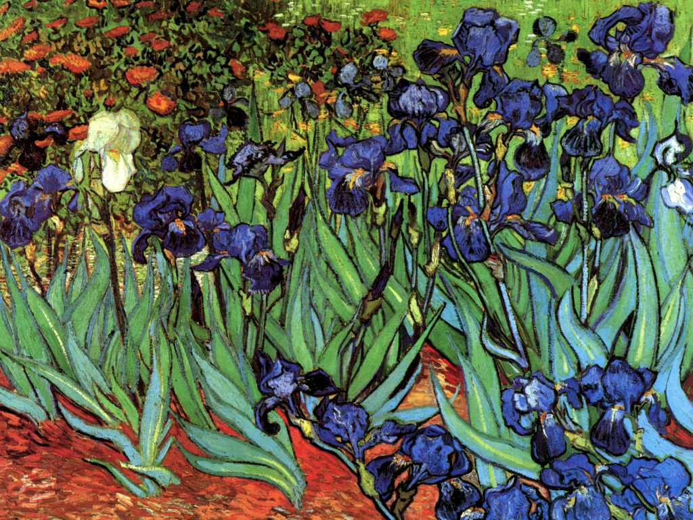

Autorretrato

- Autor: Vincent van Gogh
- Título original: Zelfportret
- Estilo: Postimpresionismo
- Tipo: Cuadro
- Técnica: Óleo
- Año: 1889
Van Gogh acudió en sus últimos años de forma repetitiva al género del autorretrato, realizando más de 30.
Con sus características líneas ondulantes cargadas de color, en 1889 se pintó una vez más a si mismo.
En esta pintura vemos a Vincent situado en el centro de la composición. Su actitud es calmada, aunque sus ojos claros se clavan en el espectador y nos miran con intensidad junto a sus cejas que nos indican cierta turbación, probablemente a causa de la enfermedad que lo acosaba.
El pintor se encuentra inmóvil, pero da la sensación de que su barba, su pelo y el fondo se mueven, debido a las líneas curvas y diagonales que transmiten un movimiento constante en la obra.
Los colores fríos de tonos celestes, turquesas y verdes presiden la mayor parte del espacio y están presentes tanto en el fondo como en el traje que lleva puesto. Son los tonos cálidos, como los naranjas de su barba y su pelo los que resaltan y hacen que centremos nuestra atención en el rostro del pintor.
Van Gogh envió el cuadro a su hermano Theo, adjuntando una carta que decía lo siguiente:
«Necesitarás estudiar el cuadro por un tiempo. Espero que notes que mis expresiones faciales se han vuelto mucho más tranquilas, aunque mis ojos tienen la misma mirada insegura que antes, o eso me parece a mí.»
La noche estrellada

- Autor: Vincent van Gogh
- Título original: La Nuit étoilée
- Estilo: Postimpresionismo
- Tipo: Cuadro
- Técnica: Óleo
- Año: 1889
Van Gogh miraba por la ventana del sanatorio de Saint-Rémy. Ya no tenía el lóbulo de su oreja y se sentía cada vez más acosado por las alucinaciones.
Cuando miraba los cipreses del jardín, éstos parecían vibrar. Cuando miraba al cielo nocturno, las estrellas parecían estar vivas. Eso es lo que captó en este lienzo que es hoy uno de los más famosos de la historia del arte.
El artista pintaría a lo largo de su carrera tanto cipreses como estrellas, ambos de marcado carácter simbólico, pero esta obra es quizás la que mejor comunica su particular estilo.
Con sus pinceladas vigorosas, Van Gogh capta un paisaje exterior y uno interior. El cielo en espiral parece moverse de verdad en el lienzo. Las estrellas tienen su propio halo, que el pintor exagera para expresar más (y adelantándose unas décadas al expresionismo).
La ciudad en cambio está quieta, estable, realizada con trazos rectos y breves, en contraste con esas curvas frenéticas del cielo.
El pintor post-impresionista dijo: “Quiero llegar al punto en que la gente diga de mi trabajo: ‘Este hombre siente profundamente’”.
Van Gogh murió meses después de pintar esta obra maestra. Tenía 37 años y tardó dos días en morir. Junto a él estaba su hermano y mecenas Theo, que moriría también poco después por un colapso mental y físico producido por la sífilis.
Campo de trigo con cipreses

- Autor: Vincent van Gogh
- Título original: Weizenfeld mit Zypressen
- Estilo: Postimpresionismo, Paisaje
- Tipo: Cuadro
- Técnica: Óleo
- Año: 1889
Vicent Van Gogh ingresa en 1889 en el Hospital Psiquiátrico de Sint-Rémy, donde mirando una y otra vez por la ventana, descubre su obsesión por los cipreses. En una de las cartas que escribe a su hermano Theo, le dice: “Los cipreses me siguen preocupando. Me gustaría hacer algo con ellos, como los cuadros de los girasoles, porque me sorprende que nadie los haya pintado aún como yo los veo.”
Y así fue… Meses después pintó esta obra conocida como Campo de trigo con cipreses. Consiguió representar la realidad del momento que observa desde su ventana.
Las pinceladas que utiliza Van Gogh son de una magistral sutileza. En el cielo, las pinceladas son largas y continuas, representando las nubes en movimiento, haciendo referencia a la corriente de aire que sopla fuerte en la ventana. En las montañas, usa pinceladas cortas y densas para transmitir la rigidez necesaria que ostenta el fondo. En el trigo y los matojos, pinta con numerosas pinceladas muy cortas y superpuestas entre ellas, representando como el viento se desliza entre las espigas.
Lirios

- Autor: Vincent van Gogh
- Título original: Lelies
- Estilo: Postimpresionismo, Flores
- Tipo: Cuadro
- Técnica: Óleo
- Año: 1889
Van Gogh pintó Los lirios durante los primeros meses de su estancia en el asilo de Saint Paul de Mausole, en Saint-Rémy, un año antes de su suicidio y la calificó él mismo como el pararrayos para mi enfermedad, ya que le parecía que se iba a volver loco si no seguía pintando.
Vincent simplemente pintó lo que tenía a su alrededor (unos 130 cuadros) y en este caso tenía unos lirios color malva creciendo en el jardín.
Estilísticamente vemos al Van Gogh de la época, con una clara influencia de los grabados japoneses y de su colega Gauguin, que le aconsejó pasar del naturalismo y pintar más bien la expresión de lo que un artista lleva dentro, llevándose por delante siglos de tradición en favor de la expresividad cromática.
Cuando en 1990 el californiano Museo J. Paul Getty se hizo con Los lirios de Vincent van Gogh, los convirtió en la obra más cara de la historia del arte hasta ese momento. La cifra no trascendió, pero el cuadro ya estaba valorado en más de 50 millones de dólares de la época.
Los responsables del museo dijeron que la obra era la mejor pintura del siglo XIX y la obra de arte más importante que se puede comprar en EE UU.